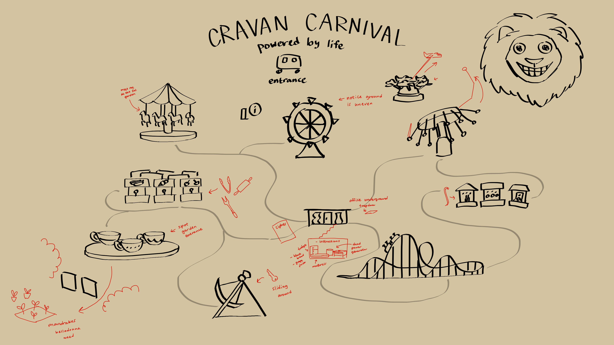

The main story of the game is the players' characters are online friends who have decided to meet up for the first time and visit the travelling Cravan Carnival, but a fog rolls in as soon as they enter.They can't seem to find the exit or the edges of the carnival no matter how far they walk into the fog, and they notice the lion mascots roaming the carnival are bloodthirsty. Now they have to work together and use their wits to solve the mystery laying underneath the carnival in order to make it out alive.
I had been wanting to run a game set in a carnival/theme park ever since I had visited the Washington State Fair for the first time. I also wanted to run a game with a clearly outlined space that the players could visualize and explore. I was also quite into electro swing at the time, and thought it suited the carnival atmosphere and would be fun to use as background music.
I printed out a version of this map without the red markings that the players could physically hold and look at during the game. The red marks were notes for myself for what clues and items I had hidden throughout the park.
For each carnival ride, I wrote for myself what background noise to play, a description of the ride, and what event happens there, which I would narrate for my players.
The direction of the story had to lead the players down into the secret bunker hidden under the Hall of Mirrors, which had everything they needed to break the curse. There were several clues in various places that they found that subtly guided them to the Hall of Mirrors, but they were too afraid and wanted to avoid it, so in the middle of the game, I made up a new clue on the fly that was more obvious than the others to try and nudge (or push) them to the Hall of Mirrors.
The coolest thing I made for the game was definitely this piece of paper which had instructions for a ritual written partly in a substitution cipher, a symbol, and the key for the cipher, the latter two of the three only being revealed if held over a fire.
Overall, the game was a success! It ran fairly smoothly, everyone was having fun and were very invested in the puzzles and solving the mystery. One of my favorite parts of the game was when all the player who had died and hadn't been playing for about an hour or so were able to come back to life as evil zombies as the curse of the carnival broken. It was absolute chaos; the carnival rides were falling apart as the zombie players were attacking the players still alive who were trying to run away before the rides crushed them to death. The ending was an absolute blast!
I realized very early on that I had made my puzzles too difficult. My players were very smart and did manage to solve n early all of them, but some took too long and caused some players to give up or lose interest. I learned that knowing your players and balancing a variety of easy to medium puzzles rather than just a few hard ones results in all players finding something that suits their taste.
My biggest regret as a game master is that I centered the lore very heavily around one player. This was because they had incorporated the setting and what little I had told them about the lore into their character backstory, which no other player had done, so I had felt it was only right to reward it. During gameplay, there was never any instance of other players having less fun because of this, but I realized it was unfair to the other players when I was revealing the full story after the game and only one player was revealed to be involved. In future TTRPG games, I would definitely incorporate all players' backstories into the lore myself, or none at all.
Below is the document that catalogs all the lore, environment, clues, and music I designed to run the game!